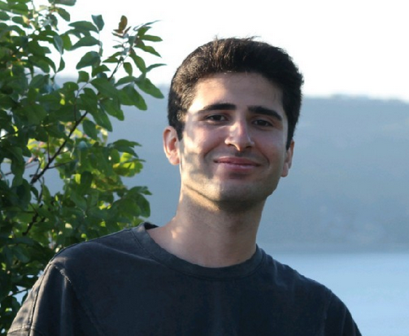

Built by engineers, driven by sustainability, and backed by science — we believe every household deserves access to real-time food freshness intelligence.
Every year, 1.3 billion tonnes of food is wasted globally — a third of all food produced for human consumption. Much of this waste happens at home, in our own refrigerators, because we rely on crude printed dates instead of actual science. FreshSense was born from a simple conviction: if we can measure the chemical reality of food freshness in real time, we can give every household the power to waste less, save more, and eat safer. We're three engineers from Istanbul Technical University — Team Ring of Fire — and we're building the technology that makes this possible.
Three engineers. One mission. Zero food wasted.

Hardware & Embedded SystemsDesigned the IoT hardware module from the ground up — selecting and integrating MOS VOC sensors, engineering the PCB layout, and optimizing the ESP32 firmware for accurate measurement and efficient hardware-to-cloud communication in refrigerated environments.
Designed and trained the hybrid Random Forest + LSTM machine learning pipeline that transforms raw VOC gas data into freshness classifications and spoilage timeline predictions. Manages data collection methodology, model validation, and continuous learning across food types.
Built the cross-platform React Native mobile application, designed the user interface and dashboard experience, and developed the AI-powered recipe recommendation engine that suggests meals using ingredients approaching their freshness threshold.
World-leading Swiss sensor manufacturer providing precision environmental sensing modules for our gas detection array. Their technology ensures the highest accuracy in VOC measurement within refrigerated environments.
Cloud infrastructure partners providing scalable compute for our ML pipeline, real-time data streaming, and secure storage — ensuring sub-second freshness predictions at global scale.
The world's largest marketplace for surplus food partners with us on sustainability marketing and shared-mission campaigns — together reaching millions of food waste-conscious consumers.
Istanbul Technical University's technology development zone provides incubation space, mentorship, industry connections, and access to research facilities that accelerate our path from prototype to production.
Reaching just 0.1% of this addressable market means 900,000 households — representing over $80M in hardware revenue alone, before subscription income. The market isn't just large — it's completely underserved.